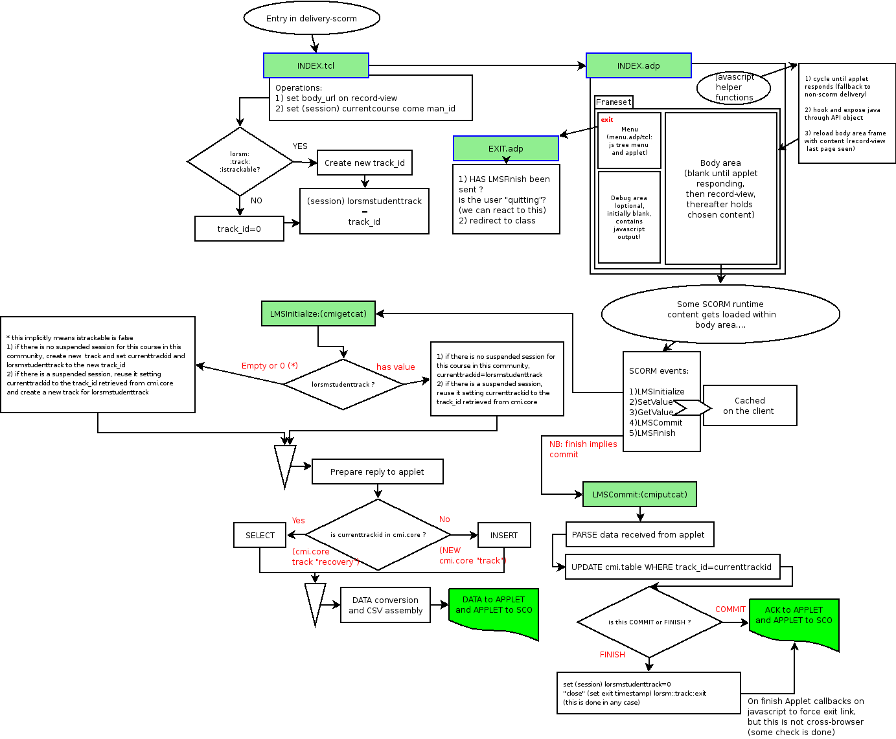

By Giancarlo Luxardo, Michele Slocovich
One of the functions of LORS management is to provide a course delivery, i.e. allowing navigation across the various resources (the content files) defined by the manifest (which encapsulates all data included in the course).
SCORM 1.2 defines two types of resources: an 'asset' is a plain file (text, image...) delivered to a learner, while a 'SCO' (learning object) is a collection of one or more assets and it represents the basic unit that can be tracked by the LMS using the SCORM Run-Time Environment. SCOs are intended to be reusable in different courses.
Basically the SCORM RTE defines the way to launch any SCO from an LMS, and to track any SCO (i.e. to know when it has been started and when it has ended). To do so, the LMS must provide a SCORM compatible API Adapter and the SCO must comply with this API Adapter.
Up to version 0.6d, LORS allows to store both assets and SCOs. However the course delivery cannot succeed for a SCO since no API Adapter is found by the SCO.
Nevertheless, LORS management (LORSm) provides a basic (non-standard) user tracking (implemented with the Views package) for courses exclusively composed of assets. The start and end times for each access done by a user are retrieved (the end time is the time the user presses the Exit button).
In order to minimize the changes in LORS 0.6d, we adopted a solution based on two delivery modes: the default LORS delivery and a new SCORM delivery. No modification is required in the storage of Content Packages by LORS. When a delivery is initiated (in packages/lorsm/lib/user-lorsm.tcl), a query looks for resources in the manifest (table ims_cp_resources) with the column scorm_type set to 'SCO': if a course is composed only of 'assets' then it does not require the RTE, if it contains at least one 'SCO' the SCORM delivery mode is used. This should make easier to maintain a branch of the code where the SCORM delivery is not included.
LORS management (packages/lorsm/www/index.tcl) is modified to add new columns to the list of available courses:
The following tables (derived from the RTE sections) are added to the LORSm data model:
Notes:
The database sequence used for the default LORS tracking (track-id) is reused as primary key of these tables (although a new sequence could also have been added). Since the track-id is set only if the course is trackable, we assume that a SCO is by default trackable.
When a SCORM delivery is initiated the following considerations are made with respect to the student track to assign to the SCORM session:
SCORM defines a common API and a launch mechanism to run a SCO. An API Adapter must be provided by the LMS to expose the API functions to the SCO. The API Adapter is a Javascript object which must reside in a parent window (or frame) of the window containing the SCO. The API Adapter is generally implemented by a Java applet (but it may be developed as well with Javascript). Java is generally considered a better choice for performance and portability.
Our implementation of the API Adapter is based on the ADL Java applet published by ADL which is available here:
SCORM Version 1.2 Sample Run-Time Environment (RTE) Version 1.2.2 http://www.adlnet.org/index.cfm?fuseaction=rcdetails&libid=738&filterid=24&page=1&keywords=&applyto=libTitle,libAuthor,contentText
LORSm by default delivers a course with a template index.adp, which contains two frames: menu.adp and body.adp. The changes involved for the RTE are:
Two functions are defined for the requests issued by the Java applet to the server:
In order to avoid the client being disconnected by the server because of a time-out setting (SessionTimeout), a KeepAlive function is called periodically as soon as the LMSInitialize issued.
Note:
It is assumed that if the SCO has not issued a LMSCommit request, the LMSFinish will guarantee the persistence of all previously set data (i.e. the LMSCommit is implicit): this is compatible with the modality defined by SCORM 2004.
Currently only cmi.core information is handled, which is required by the label LMS-RTE1.
Important elements part of cmi.core to be considered:
student-id: the username should be used but not an email address (datatype is CMIIdentifier, a function can be used to filter '@' and '.').
lesson_location: this is the last exit point from the SCO and can be used as a bookmark (SCO dependent).
credit: this is a flag indicating whether the student is credited for the SCO; a new UI should be defined in .LRN to change this setting (presently it is set to 'no-credit').
lesson-status: when all elements in the SCO have been experienced, the status is set to 'completed'; if the SCO is taken for 'credit', the status is set to 'passed' (both cases indicate tha the track should be kept); the default is presently: 'not attempted'.
entry: indicating whether the student has been in the SCO before; by default it is set by .LRN as 'ab-initio'; the .LRN should set the value to 'resume' (if the student comes back to the SCO before the completion) or to the empty string if the student loads the SCO for review purposes.
launch_data: The LMS should use the manifest (adlcp:datafromlms) element.
Published on the ADL site:
http://www.adlnet.org/
Successfully loaded and run:
SingleCourse
A SCORM 2004 Sample Run-Time Environment is available here:
http://www.adlnet.org/scorm/history/2004/srte.cfm
ADL has also put together a suite of tools that can be used by content developers in transitioning their SCORM Version 1.2 products to SCORM 2004 (useful for SCO development).
New:
packages/lorsm/sql/postgresql/lorsm-cmi-create.sql
packages/lorsm/sql/postgresql/lorsm-cmi-drop.sql
packages/lorsm/www/delivery-scorm/*
packages/lorsm/www/tracking-rte/*
Modified:
packages/lorsm/lib/user-lorsm.tcl
packages/lorsm/www/index.tcl
